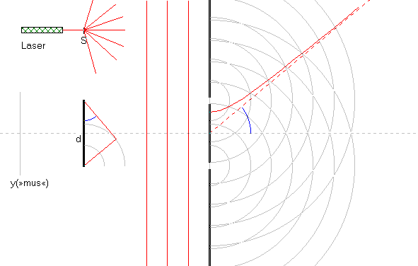

Se også gitteret.

Interferens i en dobbeltspalte vha. en laser med bølgelængden 632.8 nm.
Bemærk, at ovenstående billede er et »stilbillede«. Det kunne være et fotografi af ringbølger på en vandoverflade. Interferensmønstret varierer fra sted til sted på vandoverfladen.
Vi kan også undersøge interferensen et bestemt sted som funktion af tiden. Det gøres ved i programmet at klikke på knappen »Kør«, anbringe musen i et bestemt punkt og iagttage interferensmønstret.
Når musen flyttes til højre i billedet, vises interferensmønstret i det pågældende punkt til venstre på skærmen.
Hvor interferer bølgerne fra de to spalter konstruktivt?
og hvor interferer bølgerne destruktivt?
Med hvor menes også i hvilke(n) retning(er). Start animationen ved at klikke på knappen »Kør« og find de retninger, hvor der er destruktiv interferens.
Udskriv et skærmbillede og skriv betegnelser på den lille figur nederst til venstre, og opstil dernæst en ligning for konstruktiv interferens.
ps. Kurverne, hvor der er konstruktiv interferens er hyperbler.
Når vi belyser en dobbeltspalte med en laser, betragter vi måske interferensmønstret på en skærm i 2 meters afstand fra dobbeltspalten. Det er så langt væk fra dobbeltspalten, at hyperblerne er »blevet til rette linier«, se den stiplede linie på figuren.